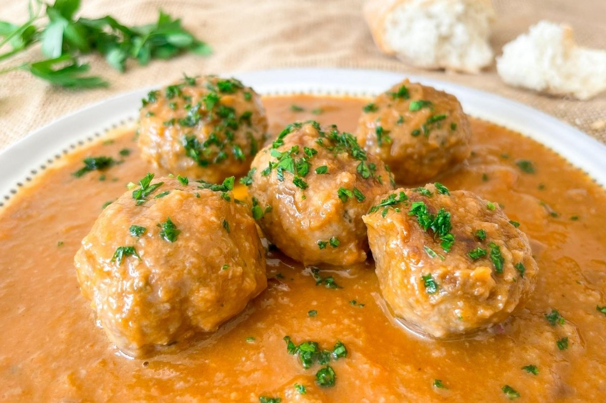

Huevos rotos con chorizo
Uno de mis platos favoritos de toda la vida. Una bomba de calorías llena de felicidad y sabor. huevos fritos en sartén con abundante aceite de oliva a los que se les deja la yema casi cruda de manera que se rompan fácilmente al momento de servir y que entonces mojen las patatas fritas, que son el acompañante principal de este plato.
Además de patatas fritas, los huevos estrellados (también se les llama así), suelen llevar otro acompañante que varía entre productos embutidos, alguna proteína fresca, o incluso verduras y setas.
Su versión más clásica es la de huevos rotos con jamón, seguida de los increíblemente deliciosos huevos rotos con chorizo.
También existen los huevos rotos con chistorra, huevos rotos con gulas, huevos rotos con setas, y luego hay mezclas que incluyen varios ingredientes: huevos rotos con setas, chorizo y pimientos, y cosas así.
Cachopo asturiano
Tradicional receta asturiana hecha con 2 filetes de ternera empanados que tienen en el medio queso y jamón serrano. Se acompaña de patatas fritas y normalmente con 1 plato comen 2 personas.
Nada como un buen cachopo tradicional de Asturias, hecho con un buen filete de ternera y relleno con jamón ibérico y un sabroso queso, que puede ser justamente alguno de la zona, como el cabrales, u otro queso de oveja o semicurado.
En otras palabras, el cachopo es una especie de escalope, pero con relleno. Se trata de un plato que nos recuerda un poco a su primo francés, el cordon bleu.
Tortilla de patata

Clásico entre los clásicos en la gastronomía española. Las mejores tortillas de patatas son las que quedan ligeramente cremosas en el centro. Si no sabes cómo prepararla, yo te enseño.
¿Has preparado tortilla de papas española? ¿Sabes cómo hacerla para que quede bien cocida por fuera y ligeramente cremosa por dentro?
Pues bueno, te voy a enseñar cómo preparar una tortilla de papas clásica, con los ingredientes básicos: huevos, patatas, cebolla, aceite de oliva y sal.
Esta es una receta que requiere cierta práctica pero no es para nada difícil. Si sigues mis instrucciones vas a poder cocinar una tortilla perfecta.
Migas del pastor
Existen muchos tipos de migas, pero sin duda alguna podríamos decir que éstas son las más famosas:
- Migas manchegas
- En Castilla y La Mancha tienen historia, incluso las mencionan en el Quijote. Se preparan a fuego lento, y se les suelen poner uvas o melones para contrastar el sabor del respectivo chorizo.
- Migas extremeñas
- Algunas personas afirman que las migas más originales son las de Extremadura, esa región. Su preparación es similar a las manchegas. Van con abundante chorizo, panceta y pimientos.
- Migas aragonesas
- En Aragón incluyen cebolla en la fritura y uvas negras frescas al servir. También es común que incluyan longaniza.
Plato típico hecho a base de sobras de pan duro y cuya receta varía dependiendo de la región. Con chorizo son alucinantes. En algunas preparaciones llevan hasta uvas.
A las migas se les conoce también con el nombre de migas del pastor. Se preparan con sobras de pan del día anterior, aceite de oliva, ajo y, generalmente, algún chorizo, panceta ú otra parte del cerdo.
Se suelen conseguir en casi toda España y su preparación varía dependiendo de quien esté a cargo de la cocina.
Es una receta muy fácil de hacer que en principio se servía como desayuno y que poco a poco se ha convertido en parte del menú del día en restaurantes ó en tapa de bar.
En las regiones más alejadas de las grandes ciudades siguen siendo un plato importante en el día a día de los trabajadores del campo.
Cocido madrileño

Uno de los platos más increíbles de la gastronomía española. Ideal para climas fríos y para comer en grandes grupos. ¡Puf! ¡Nunca puedes servirte sólo un plato!
Lo más probable es que hayas comido cocido madrileño anteriormente y quieras hacerlo en casa. También es posible que estés un poco asustado, te han dicho que es difícil de preparar (mentira), que toma varias horas (esto sí es verdad) y que necesitas experiencia para embarcarte en la titánica misión de preparar este tradicional plato madrileño.
Pues mira, aprender cómo hacer cocido madrileño está a tu alcance, ni es difícil, ni necesitas ser un experto, lo único que necesitas es tiempo, una olla grande e ingredientes buenos.
En España la temporada de cocido madrileño empieza cuando llega el frío, comerlo antes es una locura. En muchos restaurantes no lo preparan hasta que llega la temporada, en otros, los más turísticos y los tradicionales sí que lo puedes conseguir, pero de verdad tienes que estar un poco loco para comerlo un día de verano a 35 grados centígrados.
Patatas bravas

Patatas cortadas en trozos medianas a las que se les pone encima una salsa brava a base de tomate, es ligera (o medianamente) picante.
Al lado del escudo que lleva la bandera española debería aparecer también un suculento plato de patatas bravas, sin que deje boquiabierto a nadie. Las llamadas “bravas” comprenden una de las raciones de tapas más emblemáticas de la españolidad y por lo tanto deberían ser materia de estudio concienzudo en los currículos de España. Pero como no lo es, con toda la seriedad que requiere el caso te enseñaremos ahora mismo cómo hacer patatas bravas.
Su fisionomía: patatas fritas troceadas en tamaño medio como para que cada bocado se ajuste perfectamente al paladar del comensal, muy a la española, porque de manera soberana se resisten a copiar los ultra expandidos bastones de patatas fritas.
Su alma: un generoso baño de salsa brava, mágica, jugosa de tonalidades rojo-naranja que podríamos comparar con la sangre ibérica misma y que, de no ser por ella, las raciones de patatas españolas no pasarían de ser unas patatas más servidas es cualquier parte del mundo.
Paella valenciana
Para muchos, la reina de todas las paellas. Su versión valenciana con pollo y conejo es inigualable. Digno embajador de la comida española en el mundo entero.
La Paella Valenciana es la reina de las paellas. El plato insignia de toda una región, y uno de los más legendarios de toda la comida española.
Saber cómo hacer Paella Valenciana correctamente es todo un arte, un arte que afortunadamente no es para nada difícil de aprender.
Una de las cosas más importantes que debes saber al momento de preparar una Paella Valenciana es conocer cuales son los ingredientes correctos. Y digo esto porque suele haber confusiones en aquellas personas que no son conocedoras de la gastronomía española.
Croquetas de jamón

Hay muchos tipos de croqueta, las clásicas de jamón, de pollo, de morcilla, de bacalao incluso de cocido.
Las mejores croquetas son las de jamón. Esto no debería tener ningún tipo de discusión a estas alturas. Son las más sabrosas de todas y seguramente las que más probamos de nuestras abuelas o madres. Además no son tan complicadas de hacer como creemos. De todos modos aquí te voy a enseñar a preparar croquetas de jamón paso a paso.
Pulsa aquí para ver la receta
Gazpacho andaluz

Cuando llega el verano, llega el gazpacho, y nuevamente los andaluces se destacan en la cocina con esta delicia refrescante.
Recetas de gazpacho andaluz hay miles, básicamente cada ciudad, cada pueblo, cada hogar tiene su propia forma de hacer esta famoso plato casero.
El objetivo final siempre es el mismo: preparar una deliciosa sopa fría a base de tomate que, además de alimentar, ayude a refrescarte un poco en los días de verano inclemente.
Te voy a enseñar cómo hacer gazpacho andaluz en su versión más clásica y tradicional. A partir de esta receta puedes quitarle o ponerle lo que se te antoje, de seguro puedes lograr resultados geniales si te dejas llevar por tu creatividad.
Es importante destacar que si bien el gazpacho andaluz es, por decirlo de algún modo, el rey de los gazpachos, no es el único, existe también el llamado gazpacho manchego, el gazpacho extremeño y un sin fin de variaciones hechas a base de frutas como fresas, sandías y frambuesas.
Albóndigas en salsa

Un plato que suele conseguirse como tapa en los bares o como plato principal acompañado de ensalada o patatas.
Pocas cosas en el mundo son tan deliciosas como un buen plato de albóndigas en salsa de tomate, y sin son caseras y hechas por tu madre, mucho mejor.
Generalmente este tipo de platos los comíamos los domingos en familia y siempre sobraba para repetir en la semana. Hablamos de una comida abundante que hace feliz a cualquiera. Hablamos de una de las mejores recetas caseras que existen.
Esta receta de albóndigas en salsa es la que hace mi madre desde que tengo uso de la razón, por lo tanto, muy subjetivamente puede decir que es mi favorita y no hay ninguna otra mejor en todo el universo en expansión.
Es muy, muy, pero muy fácil de hacer y el resultado es obviamente alucinante. Te invito a que prepares esta receta de albóndigas de carne en salsa de tomate y me cuentes cómo te ha ido con ella.
Importante esto: puedes hacerlas con carne de ternera o de cerdo, y por supuesto puedes mezclar ambas.
Pulsa aquí para ver la receta